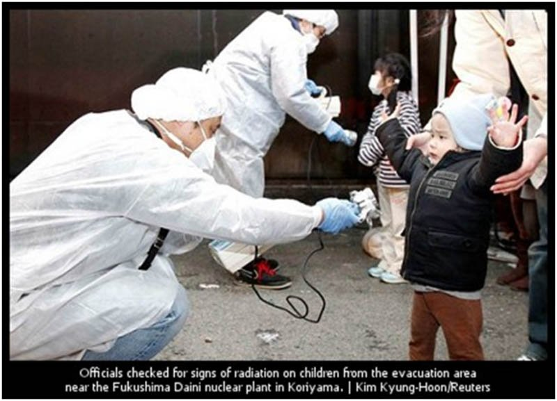
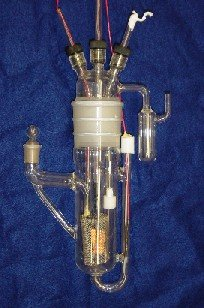
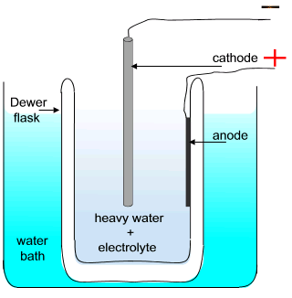

Cold Fusion
Wisdom-Square › Alternative Energy Sources › Cold FusionStanley Pons and Martin Fleischmann, both professors at the University of Utah and at the time considered to be amongst the world’s leading electrochemists, discovered “cold fusion” in 1989. Cold fusion is a type of nuclear reaction that would occur at, or near room temperature. Today, nuclear reactions are considered “hot fusion” because the temperature needs to be in the tens of millions of degrees for energy to be produced. This obviously is very dangerous for the workers and area around the nuclear plant. Some of the worst disasters on our planet has been a result of nuclear accidents such as: Three Mile Island in Pennsylvania, Fukushima Daiichi in Japan (displacing 50,000 household in 2011), and the worst of all Chernobyl in Ukraine just to name a few.
Although the dangers are very serious, cold fusion redefines our understanding of the world like many other inventions, and was suppressed. Researchers are unable to receive government funding if they claim they are working on developing this today. Cold fusion would have made a cheap and abundant source of energy. Pons and Fleischmann however were vilified by the scientific community and the press when it was reported by M.I.T. (the leading recipient of Federal funding for “hot fusion”) that they failed to reproduce the results reported. This finding by M.I.T. has been used as a basis for denying all attempts to patent a “cold fusion” device in the United States.
|
 |
It was never publically announced that Dr. Eugene Mallove of M.I.T. discovered that the data presented in M.I.T.’s research had been edited. According to the original data, it proves that the device M.I.T. built did in fact produce more energy than had been put into it. But, in order to continue receiving the large amount of Federal funding for “hot fusion,” M.I.T. decided to withhold their findings.
Pons and Fleischmann never retracted their claims and attempted to run the National Cold Fusion Institute in Utah, but in 1991 it ran out of funds. In 1992, Pons decided to leave his tenure, and Fleischmann went with him to move their research program to Toyota Motor Corporation’s IMRA lab in France after the controversy erupted. In 1998 the lab closed after spending $40 million with no tangible results.
However, in February 2002, the U.S. Navy revealed that its researchers had been studying cold fusion secretly since the possibility was first announced. Most of the work was carried out at the Space and Naval Warfare Systems Center in San Diego, where the idea of generating energy from sea water came about. Many of the researches worked with Fleischman, and were reported saying that they couldn’t believe that his claims were rejected. The Navy encouraged a culture of risk-taking in research and made available small amounts of funding for researchers to pursue their own interests. Over the years, a number of groups around the world have reproduced the original cold fusion device, yielding sometimes as much as 250 percent of the energy put in. Despite this, main-stream science still chooses to ignore all of these claims and it was reported that the Navy was denied additional funding for some of their more successful experiments. Then again, who knows what’s really going on?
|
 |
 |
Nuclear power today is considered to be the only energy source that can produce enough power required by a typical American city, while producing minimal pollution. Compared to burning coal and oil, this is much more sustainable for the environment, but much more dangerous if something were to go wrong due to radiation poisoning. Solar and Wind energy is claimed to not be able to provide enough energy for us yet, however click here to see if that’s really the case.
Wisdom-Square › Alternative Energy Sources › Cold Fusion